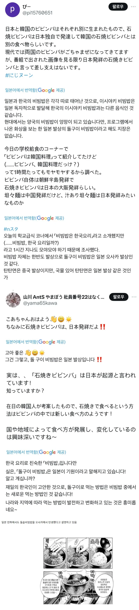
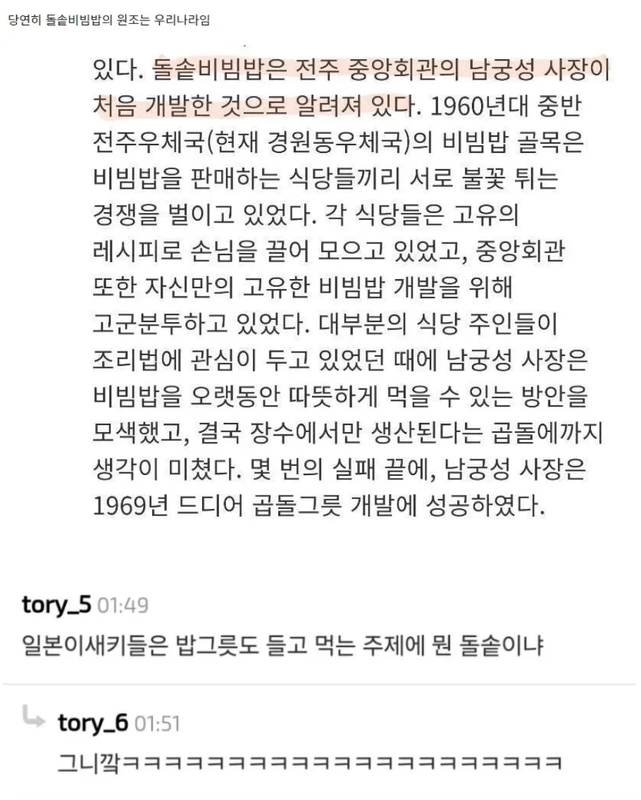

ㅋㅋㅋㅋㅋㅋㅋㅋㅋㅋㅋ
양심도없지


ㅋㅋㅋㅋㅋㅋㅋㅋㅋㅋㅋ
양심도없지

저거 유명한댓글이 돌솥도 들고먹으면 인정해준다는거 있지않았나? ㅋㅋㅋㅋㅋㅋㅋㅋㅋㅋㅋ
뜨거운 돌솥 들고 함 무바라
일본은 시발 덮밥가지고 비빔밥풍 이지랄하는데 비빔밥도 뭔지도 제대로 모르는새끼들이 시발 돌솥비빔밥이요?
돌솥 비빔밥이 막 엄청 오래된게 아니었구나..
우리가알고잇는 한식 대부분이 일제강점기이후일걸
오사카 츠루하시 = 일본의 대표적인 코리안 타운 = 1920년대 운하공사에 동원된 조선인들이 모여살면서 만들어진 곳
짱쪽일체
그 뜨거운걸 들고 먹었단다ㅋㅋㅋ 숟가락도 잘 안쓰면서
저런건 저능아 넷우익들이나 하는주장이지 위키나 대부분일본인들은 한국꺼인거 알던다
근데 그 넷우익이
우리나라 일본이야기 나오면 지리 길거리 이름 까지 줄줄이 아는척 하느라 신내는 수많은 씹덕들만큼 수가 있음 저긴
최소 남자는 우리나라 씹덕들의 일방적인 짝사랑이야
그 저능아들이 20년 전에 공자한국인설 유포해서 진짠줄 아는 머저리들이 수두룩한 거 보면 마냥 일부라고 무시하기도 좀 그래
일본 황교익 ㄷㄷ
우리나라에서 69년도에 이미 돌솥비빔밥이 기록에 등장하고 71년도엔 특허등록도 됐는데 일본 등장은 75년도 츠루하시 한국음식점이고 그 창업자도 한국가서 돌솥 사왔다고 인터뷰한 기록이 있다는데.
근데 옛날인데도 전파가 빠르네
요즘은 유행 한번 퍼지면 한달은 커녕 몇주만에 세계 반대편까지 퍼지니까.
낫토나 비벼 처먹으렴.
저새끼들은 중국인임? 얼탱이가없내
저런 거 갖고 진지하게 일본 싸잡아서 욕하면 한국인들은 공자가 한국인이라고 우긴다면서 까는 중국인들이랑 크게 다를 바가 없긴 함ㅋㅋ
그 공자설 퍼뜨린게 일본 넷우익임ㅋㅋㅋㅋㅋㅋ
일본 타베호다이 무한리필 고기집에서 사이드메뉴에 돌솥비빔밥 있었는데 일본애들이 돌솥 비빔밥 받침 들고 밥먹는거 보고 감탄함
절대로 식탁에 놓지 않겠다는 집념의 일본인 ㄷㄷㄷㄷ
남궁성님 덕에 존맛탱 돌솥알밥 잘 묵고 삽니다
그럼 니들 돌솥 들고 먹어보던가ㅋㅋㅋ
ㄷㄷㄷ 아무리그래도 바늘투성이 돌솥은 너무했다....
비빈파라고 파는게 너희에요
저쪽은 돌솥을 집는 집게조차 한국에서 수입해서 쓸거같은데
저새끼들 중국한테 배웠나
일단 처 우기고있네
우동 국물 숟가락으로 비벼지긴 하냐?
생각해보니 젓가락 식사 +들고 먹는 돌솥 조합은 절대 일본 문화가 아니네 ㅋㅋㅋㅋㅋㅋ
돌솥 들고먹으면 ㅇㅈ할까말까
같잖아서 웃음도 안나오네
열등감이 표출되기 시작하는거 보니
한국문화가 뿌리내리고있긴 한가 봄
들고 쳐먹어봐
쟤네는 밥 발음도 안돼서 비빈파 쿠파 이지랄하지 않나?
생각보다 얼마 안되었네.. 1960년
주제랑 다른말이지만 돌솥밥 진짜 별로더라. 바싹 태우듯이 가열해서 바닥부분 딱딱하게 붙어있고 특유의 탄내도 싫음
숟가락도 렝게인가 말고는 거의 안 쓰면서 뭘 ㅋㅋㅋ